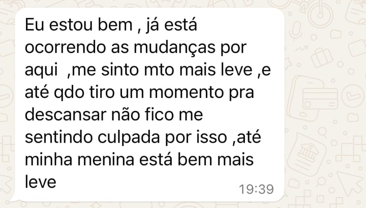
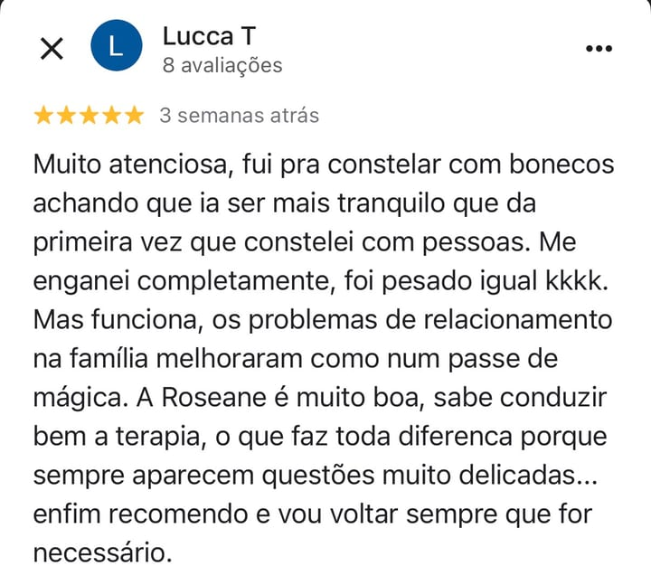
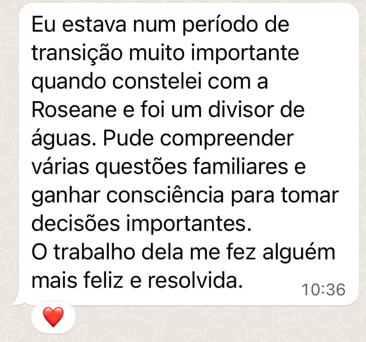
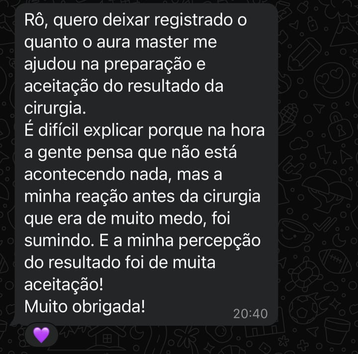
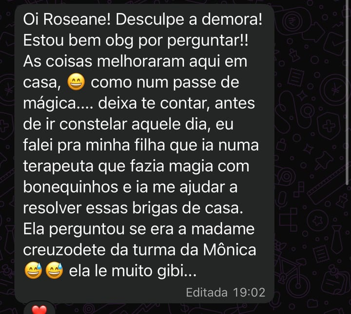

Mentora em Autoconhecimento · Terapeuta integrativa · Método LAR
Dá conta do trabalho, da casa, de todo mundo — e ainda sente culpa quando para. Mas o cansaço não é da rotina. É de uma vida inteira se colocando por último.
Eu conduzo a mulher que se perdeu cuidando de todos, menos de si, de volta para dentro de casa: para dentro de si.
Vamos conversar ↓
“A história que te quebrou não começou em você.
O caminho de volta, sim. E ele começa com uma escolha: parar de fugir e, enfim, olhar.”
Sobre mim
Sou Roseane Sena, criadora do Método LAR. Mas por muito tempo eu fui só uma mulher exausta, cuidando da casa do mundo inteiro e dormindo sem teto dentro da própria vida.
Aprendi cedo que, para ser amada, eu precisava cuidar. Meus pais se separaram. Meu pai se perdeu no álcool. E aquela menina foi se apagando para não incomodar — até virar adulta dando tudo para os outros e quase nada para si.
Passei anos achando que o problema era eu: que eu era fraca, ingrata, que bastava me esforçar mais. Até o dia em que o corpo e a alma avisaram, juntos, que assim não dava mais.
Foi aí que veio a virada que mudou tudo: a história que me quebrou não tinha começado em mim. Eu carregava padrões que vinham de muito antes — da minha linhagem. Coisas que herdei sem nunca ter escolhido.
Mas entender isso não foi desculpa — foi direção. Uma coisa é a ferida que a gente herda. Outra, bem diferente, é o que a gente escolhe fazer com ela a partir de agora. E essa parte é minha. É sua. É de cada uma de nós.
Então eu desci. Fui até a raiz, no porão onde a gente guarda o que dói. Fiz as pazes com o que encontrei. E, peça por peça, restaurei a casa que era minha. Esse caminho virou método: o LAR — Liberação, Acolhimento, Restauração.
Hoje é isso que eu faço: conduzo mulheres que se perderam cuidando de todos, menos de si, de volta para dentro de casa — caminhando lado a lado com cada uma, como quem já fez essa travessia e conhece o caminho de volta.
A casa como caminho
Um lugar dentro de você onde dê, enfim, para descansar. Um caminho integrativo — corpo, emoção, história e o sagrado que sustenta tudo. A gente chega lá em três movimentos.
o porão — onde mora o que pesa
Descer até a raiz e iluminar o que ficou guardado no escuro. Não para remoer — para soltar o que você carrega e que nunca foi seu.
o sótão e o coração da casa
Subir ao sótão, onde ficam as heranças — os padrões repetidos sem você ter escolhido. Fazer as pazes com a sua história e reencontrar a sua essência.
reformar e, enfim, habitar
Restaurar não é construir outra mulher. É trazer de volta a que sempre esteve aí. Novos limites, dizer não sem culpa, voltar a se sentir viva.
“O que você não olha, se repete. O que você reconhece, se transforma.”
O caminho de volta
Ninguém volta para casa de uma vez. Volta um cômodo por vez. Você entra pela porta e segue até onde fizer sentido para você.
a porta
Onde tudo começa. A Constelação revela as dinâmicas do seu sistema familiar — o que se repete, o que pesa, o que ainda pede um lugar — para você ver, no corpo, de onde vem aquele padrão. Online ou presencial, individual ou em grupo. Você sai diferente de como entrou.
Quero começaro aprofundamento
Quando a porta abriu e você sente que quer continuar. Três encontros de base sistêmica para ir mais fundo na raiz, com mais tempo e mais espaço. É a ponte entre o primeiro movimento e a travessia completa.
Quero aprofundara travessia completa
O caminho inteiro pelas três fases do Método LAR, comigo, no seu tempo. A gente desce ao porão, visita o sótão e restaura a casa que é sua. A entrada é seletiva e não começa por uma decisão — começa por uma conversa: a Sessão Estratégica.
Aplique-seIntegração, não técnica solta
O Método LAR é integrativo: não cuida só da cabeça, nem só da história — cuida de você inteira. Por isso eu integro diferentes práticas ao longo do caminho, conforme o que cada mulher precisa.
Não precisa entender cada nome agora. Na nossa conversa eu te mostro o que faz sentido para onde você está.
Próximos encontros
Os encontros presenciais acontecem em São José dos Pinhais, sempre em grupo pequeno. Online, sob demanda — de onde você estiver.
Quinta-feira, 19h30 · Coworking VivaMente, São José dos Pinhais. Grupo pequeno de propósito: aqui ninguém é número. Você pode vir constelando ou como representante. Vagas limitadas — a reserva é feita pelo WhatsApp.
Elas contam
5,0 no Google · avaliações reais de quem fez a travessia
Eu poderia passar o dia aqui te falando do Método. Mas prefiro que quem já viveu te conte. Cada uma dessas mulheres um dia esteve mais ou menos onde você está agora.







Todas elas começaram com um primeiro passo. Se você quer que essa também vire a sua história, vamos conversar.
Ver as avaliações no GoogleDúvidas comuns
Os dois. Atendo online, para qualquer lugar do Brasil, e presencial aqui em São José dos Pinhais — tanto individual quanto em grupo.
Não é sobre falar do problema. É sobre ver. A gente revela as dinâmicas do seu sistema familiar — o que se repete, o que pesa, o que ainda pede um lugar — para você reconhecer de onde vem aquele padrão e sentir, no corpo, o alívio de colocar cada coisa no seu lugar.
Não. Você não precisa chegar com tudo claro — esse encontro é justamente para enxergar o que normalmente fica invisível. Basta vir com disposição de olhar, mesmo que dê um friozinho na barriga.
Aí provavelmente você mexeu na superfície, não na raiz. Conversar sobre o problema, descansar no fim de semana, uma viagem — ajuda um pouco, mas o que prende está mais fundo: em padrões que se repetem sem você perceber. Reconhecer isso não é para culpar ninguém — é para você poder, enfim, fazer diferente. E é nesse caminho que eu te acompanho.
Não. O sagrado aparece no meu trabalho porque faz parte de quem eu sou — mas sem denominação e sem dogma. O que a gente cuida aqui é de você voltar para você.
Não. É um trabalho de desenvolvimento pessoal e autoconhecimento, de natureza integrativa e complementar. Ele não substitui acompanhamento médico, psicológico ou de qualquer profissional de saúde.
Vamos conversar
Se você se reconheceu em alguma dessas palavras, talvez não seja por acaso. Me chama — no seu tempo, do seu jeito. Eu te espero.
Chamar no WhatsApp